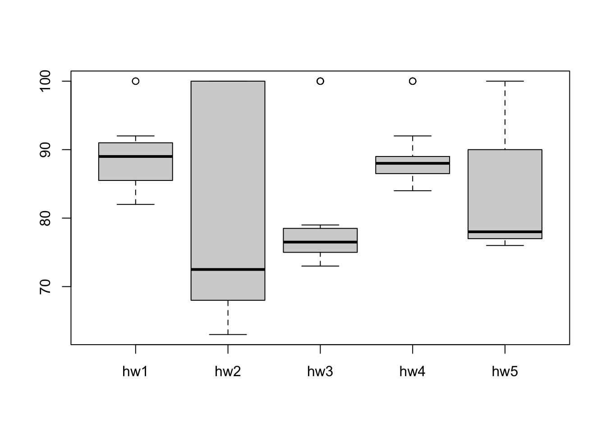
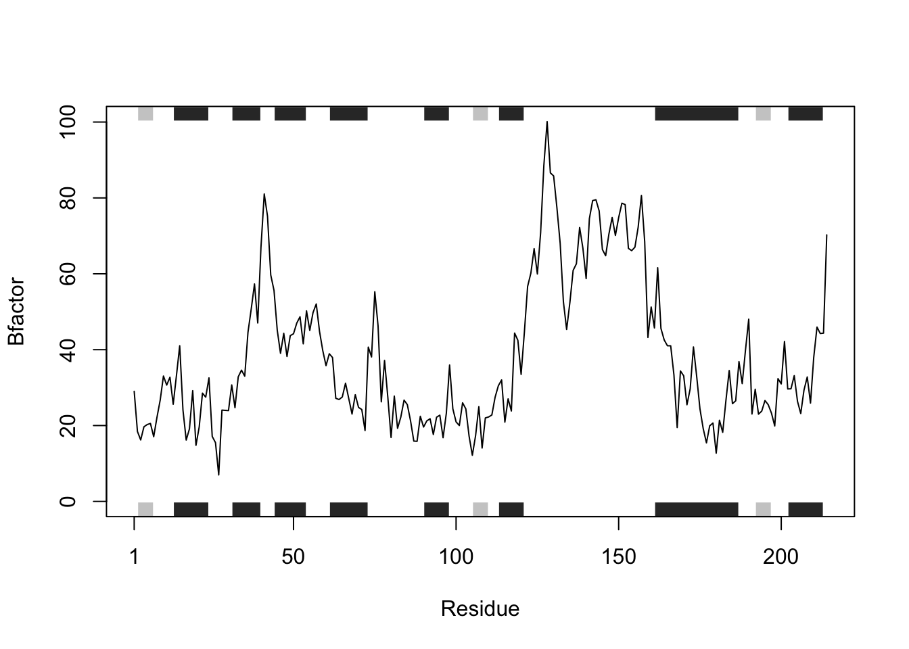

# Example input vectors to start with
student1 <- c(100, 100, 100, 100, 100, 100, 100, 90)
student2 <- c(100, NA, 90, 90, 90, 90, 97, 80)
student3 <- c(90, NA, NA, NA, NA, NA, NA, NA)lab06
Functions in R
# removes elements based on the index [-idx]
mean(student1[-which.min(student1)])[1] 100mean(student2[-which.min(student2)],na.rm=T)[1] 92.83333mean(student3[-which.min(student3)],na.rm=T)[1] NaNstudent3[is.na(student3)] <- 0 # assign 0 value to all the NAs
student3[1] 90 0 0 0 0 0 0 0grade <- function(x) {
x[is.na(x)] <- 0
mean(x[-which.min(x)])
}# test the function
grade(student2)[1] 91# import the gradebook CSV file
url <- "https://tinyurl.com/gradeinput" # make the first column as row names
gradebook <- read.csv(url, row.names=1)
head(gradebook) hw1 hw2 hw3 hw4 hw5
student-1 100 73 100 88 79
student-2 85 64 78 89 78
student-3 83 69 77 100 77
student-4 88 NA 73 100 76
student-5 88 100 75 86 79
student-6 89 78 100 89 77# 1 means applying the function over rows
results <- apply(gradebook, 1, grade)
results student-1 student-2 student-3 student-4 student-5 student-6 student-7
91.75 82.50 84.25 84.25 88.25 89.00 94.00
student-8 student-9 student-10 student-11 student-12 student-13 student-14
93.75 87.75 79.00 86.00 91.75 92.25 87.75
student-15 student-16 student-17 student-18 student-19 student-20
78.75 89.50 88.00 94.50 82.75 82.75 which.max(results)student-18
18 mask <- gradebook # create a copy of the gradebook
mask[is.na(mask)] <- 0
mask hw1 hw2 hw3 hw4 hw5
student-1 100 73 100 88 79
student-2 85 64 78 89 78
student-3 83 69 77 100 77
student-4 88 0 73 100 76
student-5 88 100 75 86 79
student-6 89 78 100 89 77
student-7 89 100 74 87 100
student-8 89 100 76 86 100
student-9 86 100 77 88 77
student-10 89 72 79 0 76
student-11 82 66 78 84 100
student-12 100 70 75 92 100
student-13 89 100 76 100 80
student-14 85 100 77 89 76
student-15 85 65 76 89 0
student-16 92 100 74 89 77
student-17 88 63 100 86 78
student-18 91 0 100 87 100
student-19 91 68 75 86 79
student-20 91 68 76 88 76which.min(apply(mask, 2, mean))hw2
2 boxplot(gradebook)
Q4
cor(mask$hw5,results)[1] 0.6325982apply(mask, 2, cor, results) hw1 hw2 hw3 hw4 hw5
0.4250204 0.1767780 0.3042561 0.3810884 0.6325982 HW6
library(bio3d)
prostr <- function(x, chain_name = "A", elety_name = "CA", yl = "Bfactor", atom_col = "b"){
s <- read.pdb(x)
s.chain <- trim.pdb(s, chain = chain_name, elety = elety_name)
s.atom <- s.chain$atom[,atom_col]
plotb3(s.atom, sse=s.chain, typ="l", ylab = yl)
}
prostr("4AKE") Note: Accessing on-line PDB file
plot_Bfactor <- function(x){
# read a Protein Data Bank file
s <- read.pdb(x)
# trim PDB object
s.chainA <- trim.pdb(s, chain="A", elety="CA")
# obtain b-factor values
s.b <- s.chainA$atom$b
# plot the trend of B-factor
plotb3(s.b, sse=s.chainA, typ="l", ylab="Bfactor")
}
plot_Bfactor("4AKE") Note: Accessing on-line PDB fileWarning in get.pdb(file, path = tempdir(), verbose = FALSE):
/var/folders/qh/j05y_1155rq4v6vppdk6ph5w0000gn/T//Rtmpq6TEEN/4AKE.pdb exists.
Skipping download